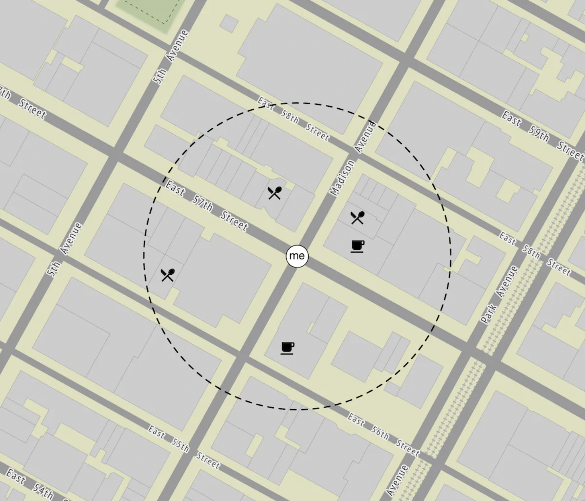
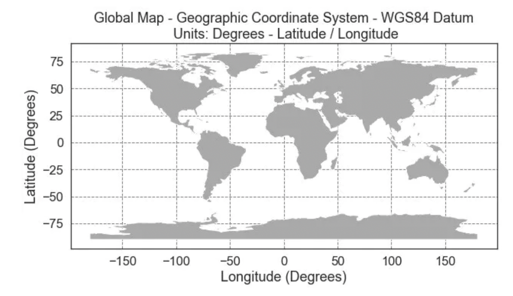
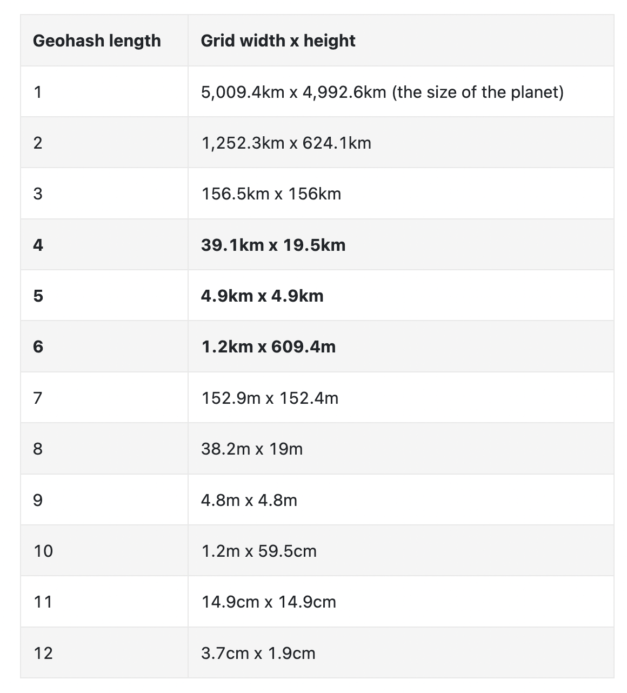

Proximity Service¶
A proximity service enables you to discover nearby places such as restaurants, hotels, theatres, etc.
Step 1 - Understand the problem and establish design scope¶
Sample questions to understand the problem better: * C: Can a user specify a search radius? What if there are not enough businesses within the search area? * I: We only care about businesses within a certain area. If time permits, we can discuss enhancing the functionality. * C: What's the max radius allowed? Can I assume it's 20km? * I: Yes, that is a reasonable assumption * C: Can a user change the search radius via the UI? * I: Yes, let's say we have the options - 0.5km, 1km, 2km, 5km, 20km * C: How is business information modified? Do we need to reflect changes in real-time? * I: Business owners can add/delete/update a business. Assume changes are going to be propagated on the next day. * C: How do we handle search results while the user is moving? * I: Let's assume we don't need to constantly update the page since users are moving slowly.
Functional requirements¶
- Return all businesses based on user's location
- Business owners can add/delete/update a business. Information is not reflected in real-time.
- Customers can view detailed information about a business
Non-functional requirements¶
- Low latency - users should be able to see nearby businesses quickly
- Data privacy - Location info is sensitive data and we should take this into consideration in order to comply with regulations
- High availability and scalability requirements - We should ensure system can handle spike in traffic during peak hours in densely populated areas
Back-of-the-envelope calculation¶
- Assuming 100mil daily active users and 200mil businesses
- Search QPS == 100mil * 5 (average searches per day) / 10^5 (seconds in day) == 5000
Step 2 - Propose High-Level Design and get Buy-In¶
API Design¶
We'll use a RESTful API convention to design a simplified version of the APIs.
This endpoint returns businesses based on search criteria, paginated.
Request parameters - latitude, longitude, radius
Example response:
The endpoint returns everything required to render a search results page, but a user might require additional details about a particular business, fetched via other endpoints.
Here's some other business APIs we'll need:
* GET /v1/businesses/{:id} - return business detailed info
* POST /v1/businesses - create a new business
* PUT /v1/businesses/{:id} - update business details
* DELETE /v1/businesses/{:id} - delete a business
Data model¶
In this problem, the read volume is high because these features are commonly used: * Search for nearby businesses * View the detailed information of a business
On the other hand, write volume is low because we rarely change business information. Hence for a read-heavy workflow, a relational database such as MySQL is ideal.
In terms of schema, we'll need one main business table which holds information about a business:
We'll also need a geo-index table so that we efficiently process spatial operations. This table will be discussed later when we introduce the concept of geohashes.
High-level design¶
Here's a high-level overview of the system: * The load balancer automatically distributes incoming traffic across multiple services. A company typically provides a single DNS entry point and internally routes API calls to appropriate services based on URL paths. * Location-based service (LBS) - read-heavy, stateless service, responsible for serving read requests for nearby businesses * Business service - supports CRUD operations on businesses. * Database cluster - stores business information and replicates it in order to scale reads. This leads to some inconsistency for LBS to read business information, which is not an issue for our use-case * Scalability of business service and LBS - since both services are stateless, we can easily scale them horizontally
Algorithms to fetch nearby businesses¶
In real life, one might use a geospatial database, such as Geohash in Redis or Postgres with PostGIS extension.
Let's explore how these databases work and what other alternative algorithms there are for this type of problem.
Two-dimensional search¶
The most intuitive and naive approach to solving this problem is to draw a circle around the person and fetch all businesses within the circle's radius: 
This can easily be translated to a SQL query:
SELECT business_id, latitude, longitude,
FROM business
WHERE (latitude BETWEEN {:my_lat} - radius AND {:my_lat} + radius) AND
(longitude BETWEEN {:my_long} - radius AND {:my_long} + radius)
This query is not efficient because we need to query the whole table. An alternative is to build an index on the longitude and latitude columns but that won't improve performance by much.
This is because we still need to subsequently filter a lot of data regardless of whether we index by long or lat:

We can, however, build 2D indexes and there are different approaches to that:

We'll discuss the ones highlighted in purple - geohash, quadtree and google S2 are the most popular approaches.
Evenly divided grid¶
Another option is to divide the world in small grids: 
The major flaw with this approach is that business distribution is uneven as there are a lot of businesses concentrated in new york and close to zero in the sahara desert.
Geohash¶
Geohash works similarly to the previous approach, but it recursively divides the world into smaller and smaller grids, where each two bits correspond to a single quadrant:
Geohashes are typically represented in base32. Here's the example geohash of google headquarters:
It supports 12 levels of precision, but we only need up to 6 levels for our use-case: 
Geohashes enable us to quickly locate neighboring regions based on a substring of the geohash:

However, one issue \w geohashes is that there can be places which are very close to each other which don't share any prefix, because they're on different sides of the equator or meridian:

Another issue is that two businesses can be very close but not share a common prefix because they're in different quadrants:
This can be mitigated by fetching neighboring geohashes, not just the geohash of the user.
A benefit of using geohashes is that we can use them to easily implement the bonus problem of increasing search radius in case insufficient businesses are fetched via query:
This can be done by removing the last letter of the target geohash to increase radius.
Quadtree¶
A quadtree is a data structure, which recursively subdivides quadrants as deep as it needs to, based on business needs:

This is an in-memory solution which can't easily be implemented in a database.
Here's how it might look conceptually:

Example pseudocode to build a quadtree:
public void buildQuadtree(TreeNode node) {
if (countNumberOfBusinessesInCurrentGrid(node) > 100) {
node.subdivide();
for (TreeNode child : node.getChildren()) {
buildQuadtree(child);
}
}
}
In a leaf node, we store: * Top-left, bottom-right coordinates to identify the quadrant dimensions * List of business IDs in the grid
In an internalt node we store: * Top-left, bottom-right coordinates of quadrant dimensions * 4 pointers to children
The total memory to represent the quadtree is calculated as ~1.7GB in the book if we assume that we operate with 200mil businesses.
Hence, a quadtree can be stored in a single server, in-memory, although we can of course replicate it for redundancy and load balancing purposes.
One consideration to take into consideration if this approach is adopted - startup time of server can be a couple of minutes while the quadtree is being built.
Hence, this should be taken into account during the deployment process. Eg a healthcheck endpoint can be exposed and queried to signal when the quadtree build is finished.
Another consideration is how to update the quadtree. Given our requirements, a good option would be to update it every night using a nightly job due to our commitment of reflecting changes at start of next day.
It is nevertheless possible to update the quadtree on the fly, but that would complicate the implementation significantly.
Example quadtree of Denver:
Google S2¶
Google S2 is a geometry library, which supports mapping 2D points on a 1D plane using hilbert curves. Objects close to each other on the 2D plane are close on the hilbert curve as well:
This library is great for geofencing, which supports covering arbitrary areas vs. confining yourself to specific quadrants.
This functionality can be used to support more advanced use-cases than nearby businesses.
Another benefit of Google S2 is its region cover algorithm, which enables us to define more granular precision levels, than those provided by geohashes.
Recommendation¶
There is no perfect solution, different companies adopt different solutions:
Author suggest choosing geohashes or quadtree in an interview as those are easier to explain than Google S2.
Here's a quick summary of geohashes: * Easy to use and implement, no need to build a tree * supports returning businesses within a specified radius * Geohash precision is fixed. More complex logic is required if a more granular precision is needed * Updating the index is easy
Here's a quick summary of quadtrees: * Slightly harder to implement as it requires us to build a tree * Supports fetching k-nearest neighbors instead of businesses within radius, which can be a good use-case for certain features * Grid size can be dynamically adjusted based on population density * Updating the index is more complicated than updating the geohash variant. All problems with updating and balancing trees are present when working with quad trees.
Step 3 - Design Deep Dive¶
Let's dive deeper into some areas of the design.
Scale the database¶
The business table can be scaled by sharding it in case it doesn't fit in a single server instance.
The geohash table can be represented by two columns:
We don't need to shard the geohash table as we don't have that much data. We calculated that it takes ~1.7gb to build a quad tree and geohash space usage is similar.
We can, however, replicate the table to scale the read load.
Caching¶
Before using caching, we should ask ourselves if it is really necessary. In our case, the workflow is read-heavy and data can fit into a single server, so this kind of data is ripe for caching.
We should be careful when choosing the cache key. Location coordinates are not a good cache key as they often change and can be inaccurate.
Using the geohash is a more suitable key candidate.
Here's how we could query all businesses in a geohash:
Here's example code to cache the data in redis:
public List<String> getNearbyBusinessIds(String geohash) {
String cacheKey = hash(geohash);
List<string> listOfBusinessIds = Redis.get(cacheKey);
if (listOfBusinessIDs == null) {
listOfBusinessIds = Run the select SQL query above;
Cache.set(cacheKey, listOfBusinessIds, "1d");
}
return listOfBusinessIds;
}
We can cache the data on all precisions we support, which are not a lot, ie geohash_4, geohash_5, geohash_6.
As we already discussed, the storage requirements are not high and can fit into a single redis server, but we could replicate it for redundancy purposes as well as to scale reads.
We can even deploy multiple redis replicas across different data centers.
We could also cache business_id -> business_data as users could often query the details of the same popular restaurant.
Region and availability zones¶
We can deploy multiple LBS service instances across the globe so that users query the instance closest to them. This leads to reduced latency;
It also enables us to spread traffic evenly across the globe. This could also be required in order to comply with certain data privacy laws.
Follow-up question - filter businesses by type or time¶
Once businesses are filtered, the result set is going to be small, hence, it is acceptable to filter the data in-memory.
Final design diagram¶
* Client tries to locate restaurants within 500meters of their location * Load balancer forwards the request to the LBS * LBS maps the radius to geohash with length 6 * LBS calculates neighboring geohashes and adds them to the list * For each geohash, LBS calls the redis server to fetch corresponding business IDs. This can be done in parallel. * Finally, LBS hydrates the business ids, filters the result and returns it to the user * Business-related APIs are separated from the LBS into the business service, which checks the cache first for any read requests before consulting the database * Business updates are handled via a nightly job, which updates the geohash store
Step 4 - Wrap Up¶
Summary of some of the more interesting topics we covered: * Discussed several indexing options - 2d search, evenly divided grid, geohash, quadtree, google S2 * Discussed caching, replication, sharding, cross-DC deployments in the deep dive section